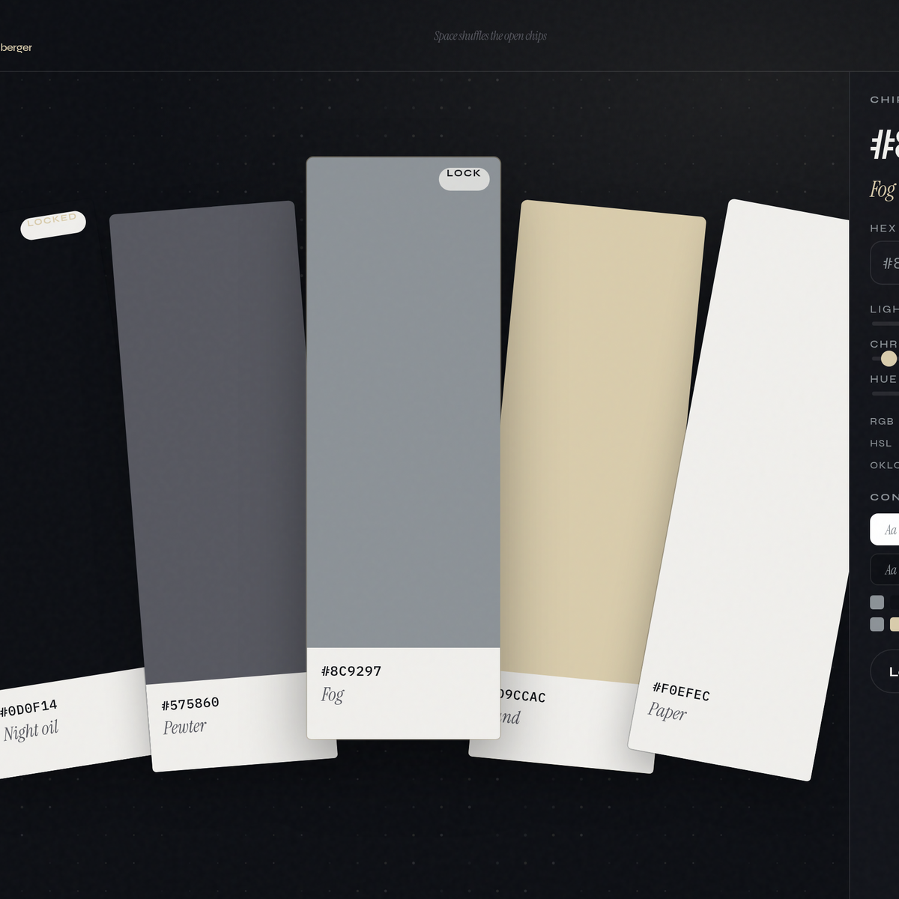
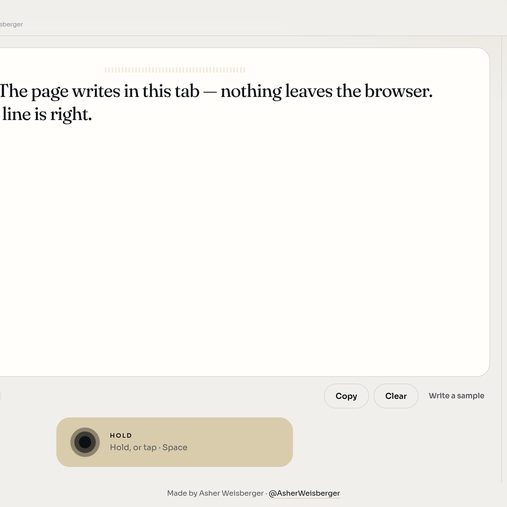
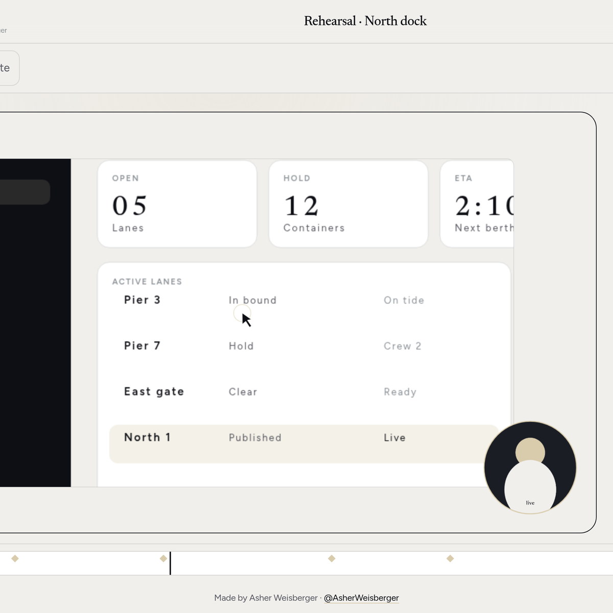
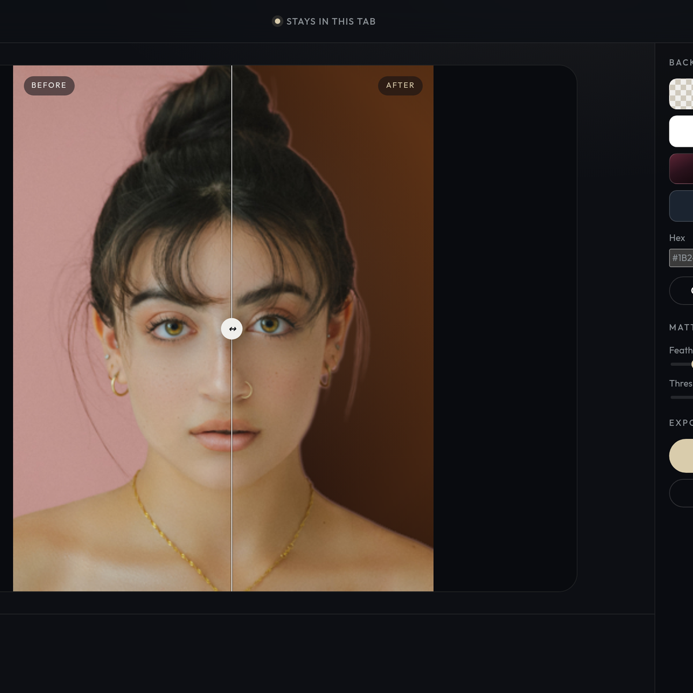
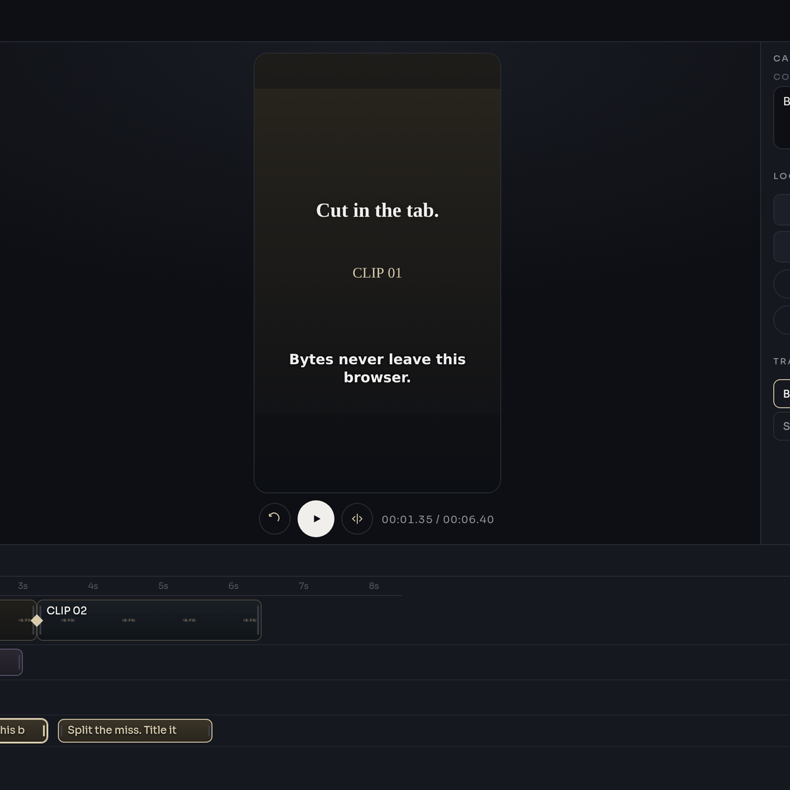
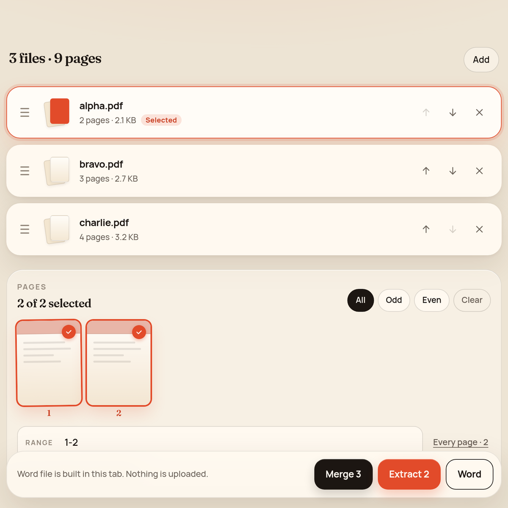
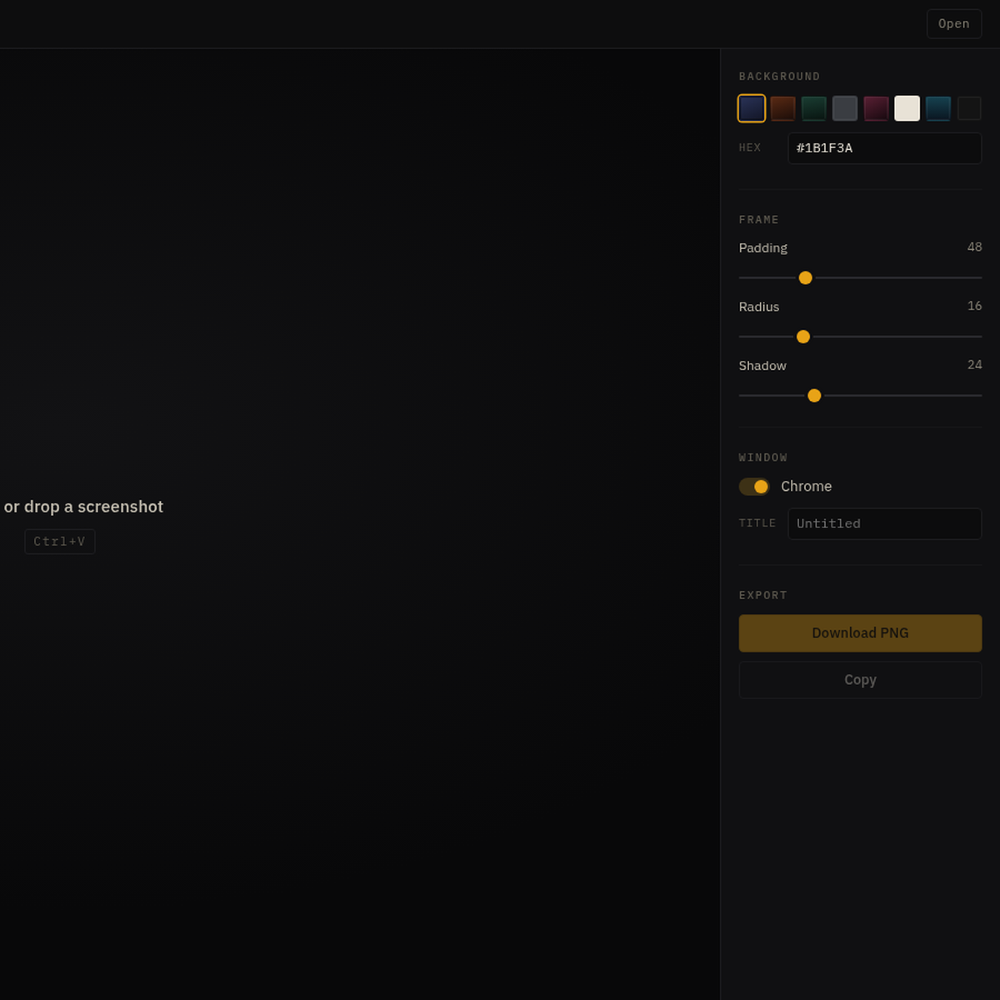

01Original alternative

Swatchkit
A color book in the tab. Shuffle, lock, pull from a photo, export CSS. Colors stay here.
Seven focused tools for speaking, editing, cutting, merging, framing, and color. No accounts. No uploads. Just open and make.
Explore all ↓Selected applications
07 projects / always free

A color book in the tab. Shuffle, lock, pull from a photo, export CSS. Colors stay here.

Hold to talk. The page writes in this tab. Copy when the line is right.

Record a take. The kit leans in on the click, mats the frame, exports in the tab.

Cut the subject out in the tab. Hair-ok. No credits.

A local 9:16 editor. Split, title, caption, export. On a phone.

Merge, split, and save as Word. The files never leave this tab.

Stage a screenshot. Padding, shadow, a studio background — then download.